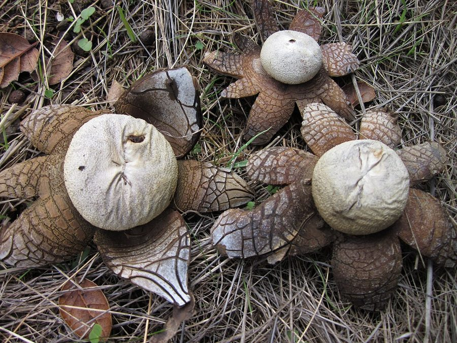

नमी-तारा खुम्बीHygroscopic Earthstar
Astraeus hygrometricus · Diplocystidiaceae · FNG-0010

- Scientific name
- Astraeus hygrometricus (Pers.) Morgan
- Family
- Diplocystidiaceae
- Hindi
- नमी-तारा खुम्बी
- Status here
- native
- IUCN
- not evaluated
When to look कब देखें
Expected mainly in September, October, November, December.
नमी-तारा खुम्बी / Hygroscopic Earthstar
Astraeus hygrometricus (Pers.) Morgan — Diplocystidiaceae
नमी-तारा खुम्बी (बारिश का तारा / अर्थस्टार / फॉल्स अर्थस्टार) — पूर्वी उत्तर प्रदेश के पर्णपाती जंगलों, सूखी रेतीली मिट्टी वाले घास के मैदानों और रास्तों के किनारे शरद ऋतु (September to December) में उगने वाला एक बहुत ही अनोखा, जमीन पर उगने वाला कवक (gastroid fungus) है। इसकी सबसे बड़ी पहचान इसके तारे के आकार की चमड़े जैसी किरणें (star-shaped rays) हैं जो हवा की नमी (humidity) के अनुसार खुलती और बंद होती हैं। नमी होने पर इसकी बाहरी किरणें (7 से 15 किरणें) बाहर की ओर फैलकर तारे की तरह खुल जाती हैं, जिससे इसका गोल बीजाणु थैला (central spore sac) जमीन से ऊपर उठ जाता है। जब मौसम सूखा हो जाता है, तो ये किरणें वापस अंदर की ओर मुड़कर बीजाणु थैले को ढक लेती हैं ताकि बीजाणु सुरक्षित रहें। यह 'प्राकृतिक हाइग्रोमीटर' (nature's miniature hygrometer) बच्चों को पर्यावरण में नमी के बदलावों को समझाने का एक सर्वोत्तम उदाहरण है। यह कवक अखाद्य (inedible) है लेकिन विषैला नहीं है। यह मिट्टी में पेड़ों की जड़ों के साथ सहजीवी संबंध (ectomycorrhizal relationship) बनाकर वनों को पोषण देने में महत्वपूर्ण भूमिका निभाता है।
Quick Identification त्वरित पहचान
| Feature | Description |
|---|---|
| Fruit body | No stem or cap; consists of a central spherical spore sac surrounded by a star-like ring of rays |
| Hygroscopic rays | 7–15 leathery rays, spreading open flat (4–8 cm wide) when wet, and curling tightly inwards when dry |
| Spore sac | 1.5–3.0 cm diameter, rounded, papery, greyish-brown, with a small opening (apical pore) at the very top |
| Outer ray texture | Leathery, thick, cracking into irregular grey-brown block patterns on the upper side |
| Spore release | Spores are released in a brown smoke-like puff when rain or fingers press the central sac |
Field tip: Search in dry sandy soil near sal tree roots during October. Look for small, star-shaped brown discs flat on the ground. Dampen a dry, closed brown ball with a few drops of water; watch it slowly unfold its rays like a flower over several minutes.
Morphology आकारिकी
Biometrics (typical measurements of mature fruit bodies in the northern Indian plains):
| Measurement | Range |
|---|---|
| Spore sac diameter | 1.5–3.0 cm |
| Rays diameter (open) | 4.0–8.0 cm |
| Rays thickness | 1.5–3.0 mm |
| Spore diameter | 7.0–11.0 µm |
Structure: Initially, the fruit body is a closed ball buried in the soil. As it matures, the outer skin (peridium) splits into rays, pushing the ball above the soil surface.
Spore Sac: The inner wall is thin, papery, grey-brown, holding a brown cottony mass of spores and fine threads (capillitium).
Spores: Spherical, dark brown, covered in tiny warty spines under a microscope.
Ecology and Substrate पारिस्थितिकी और उपस्तर
- Ectomycorrhizal Partner: Grows in mutualistic ectomycorrhizal association with the roots of deciduous forest trees, especially Sal (Shorea robusta) and Shisham (Dalbergia sissoo), exchanging soil nutrients and water for tree sugars.
- Substrate: Found growing directly on dry sandy, gravelly, acidic soils poor in organic nutrients.
- Edibility safety caveat:
> [!NOTE]
> This fungus is strictly inedible due to its tough, leathery texture and lacks any culinary value. While not reported as deadly toxic, wild mushrooms should never be consumed without expert mycological identification.
Associated Species / Interactions संबंधित प्रजातियाँ
- Raindrop Dispersal: Raindrops falling directly on the papery spore sac compress it, forcing puffs of spores out of the top pore into the air currents (splash-cup dispersal).
- Soil Insects: Small ground beetles seek shelter under the opened rays when dry.
Expected Locally स्थानीय रूप से अपेक्षित
Not a field record. Written from published accounts for eastern Uttar Pradesh. No confirmed local sighting yet — if you have seen it, that is what the atlas needs.
अभी तक स्थानीय पुष्टि नहीं। यह विवरण प्रकाशित स्रोतों से है, किसी अवलोकन से नहीं।
A common post-monsoon fungus observed in open woodlands and sandy fields of the Basti district, regularly recorded in the Harraiya and Basti blocks. Local school teachers utilize this fungus for classroom demonstrations, dry ones are collected, and children drop water on them to watch the star-shaped rays expand, calling it "magic star" (jaadui tara).
Distribution वितरण
Global range: Widespread in temperate and tropical forest zones globally; highly common in North America, Europe, and South Asia.
In India: Widespread in all deciduous forest tracts, especially in central and northern states.
In Uttar Pradesh: Distributed along all northern and eastern forest belts.
In Basti district / eastern UP: Found in sandy soils under tree plantations.
Research Questions शोध प्रश्न
Anyone can investigate these | कोई भी इन प्रश्नों की जाँच कर सकता है
- How many minutes does a dry Earthstar take to unfold its rays completely when submerged in water? — Record unfolding times.
- Does the Earthstar open its rays during humid early morning fog without direct water contact in winter? — Track ray angles.
- What is the number of Earthstar fruit bodies counted in a 10-meter forest plot near Sal trees versus open grass fields? — Survey habitat preference.
- How many times can a single spore sac be compressed before it runs completely empty of spores? — Test spore release capacity.
- Does the germination rate of Shisham seeds increase when sown in soil containing Earthstar spores in Basti? / क्या बस्ती में नमी-तारा खुम्बी के बीजाणुओं से युक्त मिट्टी में शीशम के बीजों को बोने पर उनके अंकुरण की दर बढ़ जाती है? — Conduct mycorrhizal planting trials.
Similar Species मिलती-जुलती प्रजातियाँ
| Species | How to tell apart | comparison |
|---|---|---|
| Common Earthstar (Geastrum fimbriatum) | Rays are thin, flexible, not hygroscopic (do not close when dry); spore sac has a star-like fringed mouth | सच्चा अर्थस्टार — पतली किरणें, नमी पर असंवेदनशील |
| Collared Earthstar (Geastrum triplex) | Larger; has a distinct cup-like collar around the base of the spore sac; rays crack and curl but lack hygroscopic speed | कॉलर अर्थस्टार — फल के आधार पर प्याले जैसा छल्ला |
| Puffball Mushroom (Lycoperdon perlatum) | Round or pear-shaped body with a distinct stem-like base; no rays or star-like opening | पफबॉल — बिना किरण का गोल गुब्बारा |
Field rule: Ground-growing stemless fungus with a grey-brown papery spore sac surrounded by 7–15 leathery rays that open flat when wet and curl closed when dry, is the Hygroscopic Earthstar.
Taxonomy & Classification वर्गीकरण
Original description. Christian Hendrik Persoon described this species as Geastrum hygrometricum in 1801 in his Synopsis Methodica Fungorum (p. 135). Andrew Price Morgan transferred it to the new genus Astraeus in 1889. The genus name Astraeus is derived from the Greek Astraios, the titan of the starry night, referencing the star-like fruit body. The specific name hygrometricus refers to its moisture-measuring movement.
Subspecies. Monotypic — no subspecies are currently recognised.
Family and order placement. Placed in the order Boletales, family Diplocystidiaceae (formerly in Astraeaceae).
Phylogenetic notes. Astraeus hygrometricus is genetically distinct from true earthstars (Geastrum), belonging to the Boletales (bolete) order rather than Agaricales, representing an independent evolutionary path toward a gastroid, spore-puffing lifecycle adapted to dry environments.
IUCN status rationale. Not evaluated (NE) by the IUCN Red List. It has a highly secure, abundant wild population globally.
Photo Gallery फोटो गैलरी
References संदर्भ
- Morgan, A. P. (1889). North American Fungi. Journal of the Cincinnati Society of Natural History, Vol. 12, p. 19. [original generic transfer]
- Persoon, C. H. (1801). Synopsis Methodica Fungorum. Göttingen, p. 135. [original description as Geastrum hygrometricum]
- Bilgrami, K. S., Jamaluddin, S. & Rizwi, M. A. (1979). Fungi of India. Today and Tomorrow's Printers & Publishers, New Delhi. [definitive Indian mycological reference]
- Butler, E. J. & Bisby, G. R. (1931). The Fungi of India. Imperial Council of Agricultural Research, Calcutta.
- World Flora Online (2024). Astraeus hygrometricus details.
- GBIF Occurrence Data — Astraeus hygrometricus, India (2010–2025).
Source file: species/fungi/mushrooms/hygroscopic_earthstar.md